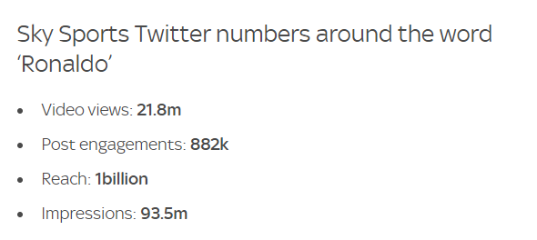
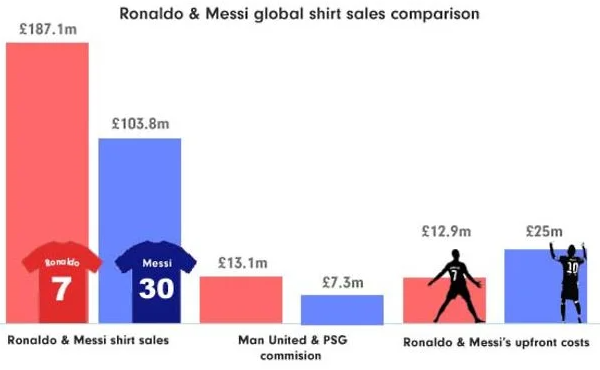

Le marché visé par ULTIMATCH est à la croisée des chemins entre la mode urbaine/casual et le sport via le sportswear donc notre démarche sera d’être très liée au sport , l’actu de celui ci , la starification des joueurs mondialement reconnus , l’étude de leurs styles qui peuvent servir de modèles à de nombreuses personnes partout sur la planète même si notre objectif numéro un pour le moment reste conquérir le marché français dans le domaine , francophone si possible puis européen lorsque le site sera traduit et nos conseils délivré en anglais pour favoriser l'expansion ,chose qui sera faite rapidement. Afin de se rendre compte un peu mieux de l'environnement ciblé nous allons passer dans un premier temps par 2 points importants .
Concernant le premier point , il apparaît clairement que le monde du sport attise les passions , le supportérisme voire le fanatisme , chaque jour des millions de maillots de foot , de basketball mais aussi foot US et baseball sont vendus à travers le monde.De façon officielle comme par la voie de la contrefaçon , ce 2eme point est impossible à estimer mais il viendrait gonfler de manière drastique les chiffres de ces ventes . A titre d’exemple dans cette étude parue cette année nous pouvons observer les ventes officielles des plus grands clubs de foot pour la saison 2018 2019

A titre d’exemple très récent (septembre 2021 ) , le transfert de Cristiano Ronaldo à Manchester United a battu tous les records de ventes et de popularité générant un engouement sur les réseaux sociaux et dans ville hors du commun , surpassant Lionel Messi (PSG), Tom Brady (Tampa Bay Buccaneers) et LeBron James ( LA Lakers) quelques chiffres ici partagés par foxnews
On parle ici de 300k à 400k de maillots vendus en 12h de 70 Millions de $ générés en 3 jours seulement . Le site givemesport.com compare également les ventes de maillots de Messi et Ronaldo https://www.givemesport.com/1750692-cristiano-ronaldo-shirt-sales-man-utd-star-hit-recordbreaking-187m-ahead-of-second-debut Les chiffres pour le seul mois de septembre sont faramineux
Ici nous disposons d’une étude très détaillée sur le marché du sport datant de 2016 réalisée par M. Shrinivas Dempo dans l’optique de faire évoluer le marché Indien .
https://assets.kpmg/content/dam/kpmg/in/pdf/2016/09/the-business-of-sports.pdf
étude à propos de la NBA et du merchandising
https://www.statista.com/topics/967/national-basketball-association
PS :je suis à la recherche d’une étude sur ce que les supporters de foot dépensent en moyenne pour leur club (maillots,matchs,produits dérivés , déplacements , cadeaux etc) car je sais que ca existe